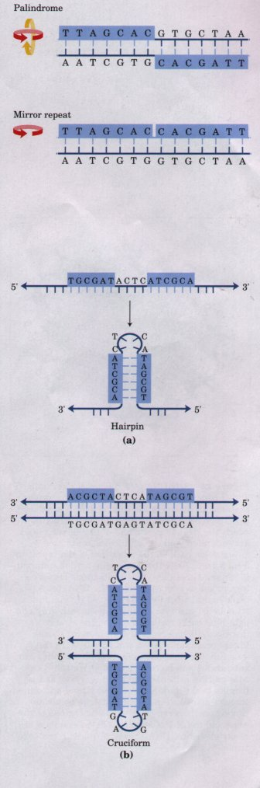
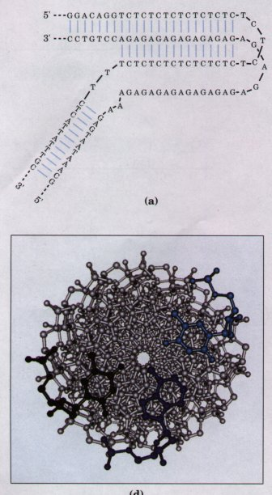
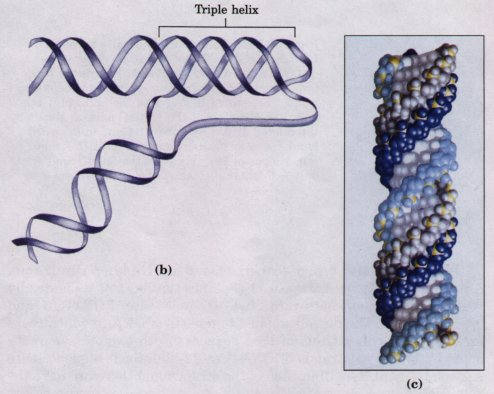
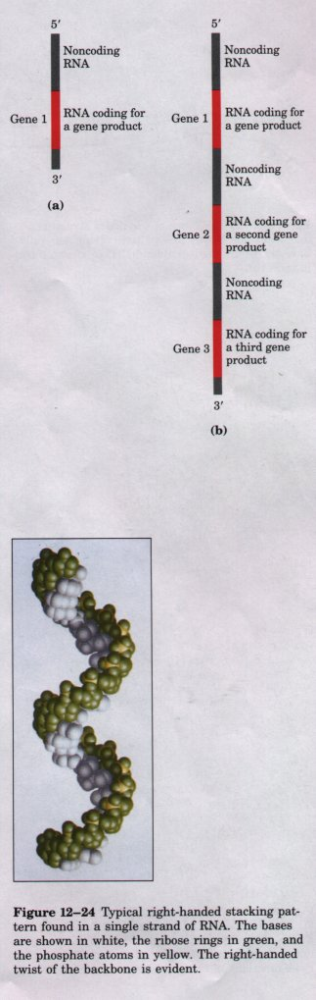
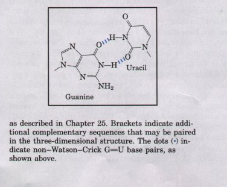
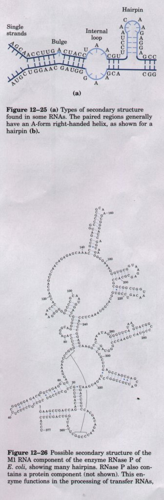
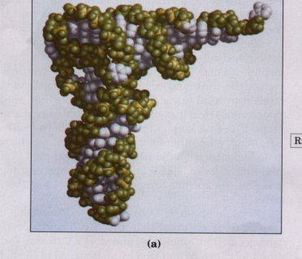
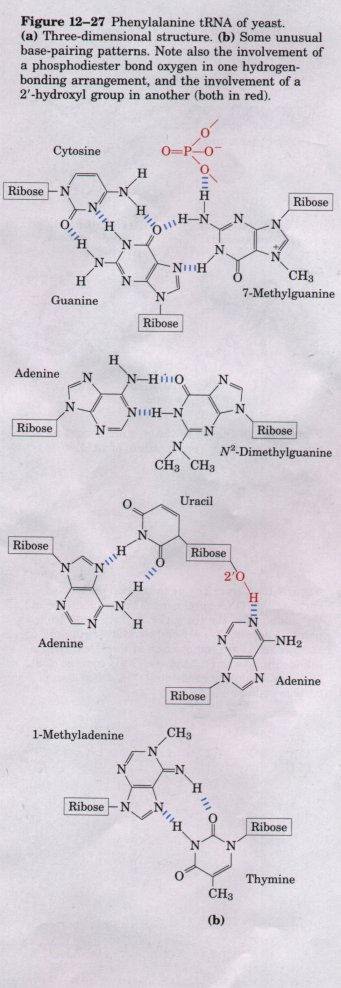

A number of other sequence-dependent structural variations have been detected that may serve locally important functions in DNA metabolism. For example, some sequences cause bends in the DNA helix. Bends are produced whenever four or more adenine residues appear sequentially in one of the two strands (Fig. 12-19). Six adenines in a row produce a bend of about 180 The bending observed with this and other sequences may be important in the binding of some proteins to DNA.
| A rather common type of sequence found
in DNA is a palindrome. A palindrome is a word, phrase,
or sentence that is spelled identically reading forward
or backward; two examples are ROTATOR and NURSES RUN. The
term is applied to regions of DNA in which there are
inverted repetitions of base sequence with twofold
symmetry occurring over two strands of DNA (Fig. 12-20).
Such sequences are self complementary within each of the
strands and therefore have the potential to form hairpin
or cruciform (cross-shaped) structures (Fig. 12-21). When
the inverted sequence occurs within each individual
strand of the DNA, the sequence is called a mirror
repeat. Mirror repeats do not have complementary
sequences within the same strand and cannot form hairpin
or cruciform structures. Sequences of these types are
found in virtually every large DNA molecule and can
involve a few or up to thousands of base pairs. It is not
known how many palindromes actually occur as cruciforms
in cells, although the existence of at least some
cruciform structures has been demonstrated in vivo in E.
coli. Self complementary sequences cause isolated single
strands of DNA to fold up in solution into complex
structures containing multiple hairpins. A particularly unusual DNA structure, known as H-DNA, is found in polypyrimidine/polypurine tracts that also incorporate a mirror repeat within the sequence. One simple example is a long stretch of alternating T and C residues, as shown in Figure 12-22. A novel feature of H-DNA is the pairing and interwinding of three strands of DNA to form a triple helix. Triple-helical DNA forms spontaneously only within long sequences containing only pyrimidines (or only purines) in one strand. Tvvo of the three strands in the H-DNA triple helix (Fig. 12-22c, d) contain pyrimidines and the third contains purines. These structural variations are interesting because there is a tendency for many of them to appear at sites where important events in DNA metabolism (replication, recombination, transcription) are initiated or regulated. For example, the sites recognized by many sequencespecific DNA-binding proteins (Chapter 27) are arranged as palindromes, and sequences that can form H-DNA are found within regions involved in the regulation of expression of a number of genes in eukaryotes. Much work is still required to defme these structures and determine their functional significance. |
Figure 12-20 Palindromes and mirror repeats. Palindromes are defined in nucleic acids as sequences with twofold symmetry. In order to superimpose one repeat (shaded sequence) on the other, it must be rotated 1800around the horizontal axis and then again about the vertical axis, as shown by the colored arrows. A mirror repeat, on the other hand, has a symmetric sequence on each strand. Superimposing one repeat on the other requires only a single 1800rotation about the vertical axis.  Figure 12-21 Hairpins and cruciforms. Palindromic DNA (or RNA) sequences can form alternative structures with intrastrand base pairing. When only a single DNA (or RNA) strand is involved it is called a hairpin (a). When both strands of a duplex DNA are involved, the structure is called a cruciform (b). Blue shading highlights asymmetric sequences that can pair alternatively with a complementary sequence in the same or opposite strand. |
 |
 Figure 12-22 H-DNA. A sequence of alternating T and C residues can be considered a mirror repeat centered about one of the central T or C residues (a). These sequences form an unusual structure in which the strands in one half of the mirror repeat are separated, and the pyrimidine-containing strand folds back on the other half of the repeat to form a triple helix (b). The purine strand (alternating A and G residues) is left unpaired. This structure produces a sharp bend in the DNA. (c) A triple-helical DNA formed from two pyrimidine strands (polydeoxythymidine, shown with gray and light blue backbones) and one purine strand (polydeoxyadenine, with a dark blue backbone). Phosphorus atoms are shown in yellow. In this structure the light blue and dark blue strands are antiparallel and paired via normal Watson-Crick base pairing patterns. The third (gray) strand is parallel to the dark blue (purine) strand and paired through non-Watson-Crick hydrogen bonds, including one between the C-4 carbonyl group of thymine and the N-7 of adenine. (d) An end view of the triple-helical DNA shown in (c), with the base triplet at one end. |
We now turn our attention briefly from DNA structure to the expression of the genetic information contained in DNA. RNA, the second major form of nucleic acid in cells, plays the role of intermediary in converting this information into a functional protein.
In eukaryotes DNA is largely confined to the nucleus, whereas protein synthesis occurs on ribosomes in the cytoplasm. Therefore some molecule other than DNA must carry the genetic message for protein synthesis from the nucleus to the cytoplasm. As early as the 1950s, RNA was considered the logical candidate: RNA is found in both the nucleus and cytoplasm, and the onset of protein synthesis is accompanied by an increase in the amount of RNA in the cytoplasm and an increase in its rate of turnover. These and other observations led several researchers to suggest that RNA carries genetic information from DNA to the protein biosynthetic machinery of the ribosome. In 1961, Francois Jacob and Jacques Monod presented a unified (and essentially correct) picture of many aspects of this process. They proposed the name messenger RNA (mRNA) for that portion of the total cell RNA carrying the genetic information from DNA to the ribosomes, where the messengers provide the templates for specifying amino acid sequences in polypeptide chains. Although mRNAs from different genes can vary greatly in length, the mRNAs from a particular gene will generally have a defined size. The process of forming mRNA on a DNA template is known as transcription.
In prokaryotes a single mRNA molecule
may code for one or several polypeptide chains. If it
carries the code for only one polypeptide, the mRNA is
monocistronic; if it codes for two or more different
polypeptides, the mRNA is polycistronic. In eukaryotes,
most mRNAs are monocistronic. (The term cistron, for
purposes of this discussion, refers to a gene. The term
itself has historical roots in the science of genetics,
and its formal genetic definition is beyond the scope of
this text.) The minimum length of an mRNA is set by the
length of the polypeptide chain for which it codes. For
example, a polypeptide chain of 100 amino acid residues
requires an RNA coding sequence of at least 300
nucleotides, because each amino acid is coded by a
nucleotide triplet (Chapter 26). However, mRNAs
transcribed from DNA are always somewhat longer than
needed simply to specify the code for the polypeptide
sequence(s). The additional noncoding RNA includes
sequences that regulate protein synthesis (Chapter 26).
Figure 12-23 summarizes the general structure of
prokaryotic mRNAs.Messager RNAs code for Polypeptide ChainsMessenger RNA is only one of several classes of cellular RNA. Transfer RNAs serve as adapter molecules in protein synthesis; covalently linked to an amino acid at one end, they pair with the mRNA in such a way that the amino acids are joined in the correct sequence. Ribosomal RNAs are structural components of ribosomes. There is also a wide variety of special-function RNAs. All of these are considered in detail in Chapter 25. Regardless of the class of RNA being synthesized, the product of transcription is always a single strand of RNA. The single-stranded nature of these molecules does not mean their structure is random. The single strands tend to take up a right-handed helical conformation that is dominated by base-stacking interactions (Fig. 12-24). The stacking interactions are stronger between two purines than between a purine and a pyrimidine or between two pyrimidines. The purinepurine interaction is so strong that a pyrimidine separating two purines will often be displaced from the stacking pattern so that the purines can interact. Any self complementary sequences in the molecule will lead to more complex and specific structures. RNA can base-pair with complementary strands of either RNA or DNA. The standard base-pairing rules are identical to those for DNA: guanine pairs with cytosine and adenine pairs with uracil (or thymine). One difference is that one unusual base pairing-between guanine and uracil-is fairly common between two strands of RNA; see Fig. 12-26. The paired strands in RNA or RNA-DNA are antiparallel, as in DNA. |
Figure 12-23 Schematic diagram of monocistronic (a) and polycistronic (b) mRNAs of prokaryotes. The polycistronic transcript shown here contains three genes. Noncoding RNA separates the genes.  |
| E. coli, showing many hairpins. RNase P
also contains a protein component (not shown). This
enzyme functions in the processing of transfer RNAs, Unlike the double helix of DNA, there is no simple, regular secondary structure that forms a reference point for RNA structure. The three-dimensional structures of many RNAs, like those of proteins, are complex and unique. Weak interactions, especially base-stacking (hydrophobic) interactions, again play a major role in stabilizing structures. Where complementary sequences are present, the predominant double-stranded structure is an A-form right-handed double helix. Z-form helices have been made in the laboratory (under very high-salt or high-temperature conditions). The B form of RNA has not been observed. Breaks in the regular A-form helix caused by mismatched or unmatched bases in one or both strands are common, and result in bulges or internal loops (Fig. 12-25). Hairpin loops form between nearby self complementary sequences in the RNA strand (Fig. 12-25). The potential for base-paired helical structures in many RNAs is extensive (Fig. 12-26), and the resulting hairpins can be considered the most common type of secondary structure in RNA. Certain short base sequences, such as UUCG, are often found at the ends of RNA hairpins and are known to form particularly tight and stable loops. Such sequences may play an important role in nucleating the folding of an RNA molecule into its precise three-dimensional structure. Important additional structural contributions are made by hydrogen bonds that are not part of standard Watson-Crick base pairs. For example, the 2'-hydroxyl group of ribose can form a hydrogen bond with other groups, and a variety of nonstandard base-pairing patterns are also observed. Some of these properties are evident in the structure of the phenylalanine transfer RNA of yeast (Fig. 12-27).  |
 |
| The analysis of RNA structure and its
relationship to function is an emerging field of inquiry
that has many of the same complexities as the analysis of
protein structure. The importance of understanding RNA
structure grows as we become aware of an increasing
number of functions of RNA molecules.  Figure 12-29 Phenylalanine tRNA of yeast.(a) Three-dimensional structure. (b) Some unusual base-pairing patterns. Note also the involvement of a phosphodiester bond oxygen in one hydrogenbonding arrangement, and the involvement of a 2'-hydrnxyl group in another (both in red). |
 |